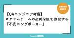

QA - SmartHR Tech Blog
https://tech.smarthr.jp/archive/category/QA
SmartHR 開発者ブログ
フィード
何を品質と定義するか、部署を越えて言語化していきたい── SmartHR品質保証部チーフ座談会 4
4
QA - SmartHR Tech Blog
品質保証部のチーフ（プレイングマネージャー）と聞くとどういった仕事を思い浮かべるでしょうか。 いわゆる「リソース管理」を想像する方もいらっしゃるかもしれません。それも在り方のひとつですが、SmartHRのチーフの役割は少し異なります。 この記事では、SmartHRの品質保証部でチーフを務める3名へのインタビューを通じて、役割と期待される成果を紐解いていきます。 インタビュアーは品質保証部マネージャーのtarappoさん（@tarappo）です。tarappoさんについては以下の記事をぜひご覧ください。 tech.smarthr.jp 目次 自己紹介、チーフ就任の経緯 品質保証部のチーフは何をす…
5日前

【QAエンジニア考案】スクラムチームの品質保証を強化する「不安ニングポーカー」 15
QA - SmartHR Tech Blog
こんにちは！QAエンジニアのhigesawaとkaomiです。私達は労務ユニットAに所属しており、開発チームの品質保証を支援する役割を担っています。品質保証部連載第10弾である今回の記事では、私達が課題を解決するために考案した「不安ニングポーカー」を紹介します。 品質保証活動における課題感 労務ユニットAは、特定の開発チームに属さず、複数の開発チームを横断して品質保証活動を行なっています*1。重要な業務の一つとして、各開発チームからの品質保証に関する相談や依頼に対応し、ノウハウ提供や実業務のサポートを行なっています。この業務を進めていくうちに開発チームから、「QAチームとの関わり方の判断基準を…
9日前

マニュアルテストどこまでやるか？ 責務範囲を相対的に考える
QA - SmartHR Tech Blog
こんにちは！QAエンジニアのmachiです。 活動の現場を開発チームの内外問わず、品質について考え、活動しています。 品質活動をしていく中で、「マニュアルテストをどこまでやればよいかわからない」という声をよく耳にします。例に漏れず、SmartHRの開発チームからも同様の声を聞きます。 そういった背景から、自分たちの現時点の考えを言語化する試みをしたので、品質保証部連載第9弾としてその内容をお伝えしようと思います。 本記事では、まず話の発端であるマニュアルテストの責務範囲について述べ、続けてそこに至った考え方や、他のテストについて書いていきます。 責務範囲の割り出し マニュアルテストだけで考える…
1ヶ月前
レバレッジ推進ユニットが目指す「全社を巻き込んだ品質課題の解決」
QA - SmartHR Tech Blog
こんにちは！QAエンジニアのark265です。 本記事は品質保証部連載第8弾です。今回はoverallユニット(以下、品質保証部直下)が2025年から、SmartHR全体に対する品質保証活動に専念するために「レバレッジ推進ユニット」として新たにスタートしたお話をさせていただきます。 新たにスタートした背景 組織を横断したプロダクト品質に挑むoverallユニットの取り組み でお伝えしたとおり、品質保証部直下では、品質保証部が目指す「良いサービスを早く提供し続ける」ことをより推進していくために、自分たちの役割を次のように定めました。 ・「品質保証部の他ユニット」に対してのレバレッジをかける ・「…
1ヶ月前
複雑な課金基盤の内部仕様にまで踏み込んだQAエンジニアの取り組み
QA - SmartHR Tech Blog
こんにちは！QAエンジニアのchokichiです。 実はSmartHRに入社して12月で5年を迎えました。それを記念して（？）初めてのTech Blogを品質保証部の連載企画の一環で書いてみたので、読んでいただけたら嬉しいです！ 私は現在、品質保証部のプロダクト基盤ユニットに所属し、課金基盤の開発チームの中に入って品質保証文化の醸成をしています。 この記事では、複数あるプロダクトのうち「なぜ課金基盤チームに入るという選択をしたのか」と「実際にチームに入って半年間でどんな活動をしたのか」について書きました。 課金基盤チームになぜ入ったのか そもそも課金基盤ってなんなの？という方は、プラン選択を柔…
2ヶ月前
品質保証部 プロダクト基盤ユニットとレバレッジ推進ユニットのメンバー募集を新規にオープンしました
QA - SmartHR Tech Blog
あけましておめでとうございます。 SmartHR 品質保証部マネージャーのtarappoです。 今期も品質保証部の連載ブログが続きますので、是非チェックしていただけると嬉しいです。 本ブログ記事は連載ブログの折り返しとなる単独記事となります。 SmartHRは1月からが新年度になります。 このタイミングで、品質保証部は次の2つの求人を公開しました。 プロダクト基盤ユニット QAエンジニア（プロダクト基盤ユニット） / 株式会社SmartHR レバレッジ推進ユニット QAエンジニア（レバレッジ推進ユニット） / 株式会社SmartHR ※レバレッジ推進ユニットは品質保証部直下のoverallチー…
2ヶ月前
SmartHR 品質保証部 プロダクト基盤ユニットの紹介 ── より良いものを目指して、品質の土台を築く
QA - SmartHR Tech Blog
こんにちは！QAエンジニアのyugeです。 突然ですが、みなさんは継続しているものは何かありますか？ わたしは、言語学習サービスDuolingoの英語版。連続学習日数が900日を超えました。お試し期間中に退会するのを忘れてしまったのが事の始まりなのですが、気づけば大台目前。継続は力なり！と願ってやみません。 品質保証部の連載企画も早いもので第6弾。ユニット紹介記事としては最後！ わたしが所属するプロダクト基盤ユニットの活動内容について紹介します！ プロダクト基盤ユニットとは 品質保証部の体制図 プロダクト基盤ユニットは、2024年7月に新設されたユニットです。 労務領域の中で作られていたプロダ…
2ヶ月前
登録社数60,000社を突破したスケールアップ企業の「品質保証」のこれから 〜新VPoE・マネージャー対談〜
QA - SmartHR Tech Blog
2024年11月現在、SmartHRの登録社数 *1は60,000社を突破しています。 またマルチプロダクト戦略のもと、常に複数プロダクトが開発・提供・利用されています。 この状況で求められる「プロダクト品質」とはどういったものでしょうか？そして、品質を支える組織に求められる活動はどういったものでしょうか？ 品質保証部のマネージャー（Acting *2）として2024年9月に入社したtarappoさんと、2025年1月よりVP of Engineeringに就任するsaitorycさんに、話を聞きました。インタビュアーは、現VP of Engineeringのmorizumiさんです。 tar…
3ヶ月前
SmartHR 品質保証部 タレントマネジメントユニットの紹介 〜開発チームが品質保証できる状態づくり〜
QA - SmartHR Tech Blog
こんにちは！QAエンジニアのhigashiです。 品質保証部連載第5弾では、タレントマネジメントユニット（以下タレマネユニット）の紹介や現在ユニットで取り組んでいることを紹介します。 タレマネユニットについて タレマネユニットはその名の通り、タレントマネジメント領域のプロダクト（以下タレマネプロダクト）を担当しているユニットです。 2024年11月時点で担当しているプロダクトは以下の10個です。 採用管理 人事評価 配置シミュレーション キャリア台帳 スキル管理 学習管理 従業員サーベイ 分析レポート HRアナリティクス 組織図 第1弾のブログで触れたように、品質保証部ではチームやプロダクトの…
3ヶ月前
SmartHR 品質保証部 労務ユニットBの紹介 〜専任ユニットからの卒業〜
QA - SmartHR Tech Blog
SmartHR品質保証部 労務ユニットBの紹介 専任ユニットからの卒業 こんにちは、QAエンジニアのringoです。 私は2019年にSmartHRへ入社して、つい先日在籍丸5年になりました。5年も在籍しているのにTech Blogに記事を書くのは初めてで、そろそろこの筆不精ぶりと真剣に向き合わないといけないな、と危機感を持ち筆をとりました。 本記事は品質保証部の連載記事第4弾です。私がチーフを務めている労務ユニットBの現在の状況、今後の方向性などについて紹介します。 今までの労務ユニットBについて 品質保証部の連載第一回目の記事で、ユニットは次のような構成になっている、と説明されています。 …
4ヶ月前
組織を横断したプロダクト品質に挑むoverallユニットの取り組み
QA - SmartHR Tech Blog
こんにちは！QAエンジニアのark265とgonkmです。本記事は品質保証部の連載記事第3弾です。 今回は、私たちが所属している品質保証部直下のチーム（以下、overallユニット）の業務・やりがい・今後の展望を紹介します。 品質保証部の体制図 overallユニットの業務紹介 overallユニットではSmartHRのサービス全体を横断した品質保証に関わる業務を行なっています。 今期は社内のセキュリティエンジニアと一緒にDevSecOpsの実現に絞って業務を行なっており、具体的にはSAST（Static Application Security Testing）やDAST（Dynamic A…
4ヶ月前
SmartHR 品質保証部 労務ユニットAの紹介
QA - SmartHR Tech Blog
SmartHR 品質保証部 労務ユニットAの紹介 こんにちは！QAエンジニアのkaomiです。 入社して1年3ヶ月が経ち、労務領域のプロダクトを中心にさまざまな業務に携わっています。 オーストラリアの固有種であるウォンバットが大好きで、10/20(日)に大阪府池田市で行われる「ウォンバットの日」が気になっています。 はじめに 本記事は品質保証部の連載記事第2弾です。今回のブログでは、労務ユニットAの紹介と現在取り組んでいる活動について紹介します。 労務ユニットAについて 第1弾のブログで触れたように、労務ユニットAは2024年7月の組織変更で新たに編成されたユニットです。チーフ（プレイングマネ…
5ヶ月前
SmartHR 品質保証部の現状の体制と目指す姿（24/09版）
QA - SmartHR Tech Blog
SmartHR 品質保証部の現状の体制と目指す姿（24/09版） はじめまして！ SmartHR 品質保証部マネージャー（Acting*1）のtarappoです。 本記事はSmartHR 品質保証部について紹介する連載記事の第一回目となります。 まずは品質保証部全体の紹介をし、今後各ユニットの紹介を定期的に公開していく予定です。 はじめに 品質保証部は今年の4月に次のブログ記事でその時点における組織体制について紹介をしています。 このブログ記事の公開から約半年が過ぎました。 その間に組織体制の変化もあり、改めて「SmartHRの品質保証部の現状の体制」と新たに言語化した「目指す姿」、そして現時…
5ヶ月前
「Yes, and…」で高めよう、チームの心理的安全性
QA - SmartHR Tech Blog
こんにちは！QAエンジニアのtanoです。 SmartHRの品質保証部は2024年7月に大きな組織変更がありました。部のなかにはいくつかのチームがあるのですが、そのチームのメンバー編成もガラリと変わりました。学生時代のクラス替えのような気持ちです。 今回は、そんななかでチームビルディングとしてインプロをやってみたという話を書いてみようと思います。 ちなみに、組織の変更については今後のテックブログで詳しく発信していくと思いますので、ぜひ楽しみにしていていただけると嬉しいです。 インプロとは インプロ（インプロヴィゼーション）は、台本や事前の準備がない即興で行われる演技の一種です。演者はその場の状…
6ヶ月前
SmartHRのQAエンジニア職にご興味をお持ちの方へ
QA - SmartHR Tech Blog
これはなに？ SmartHRのQAエンジニア職にご興味をお持ちの方向けに、参考になりそうな情報をまとめております。 最終更新日：2024-7-29 SmartHRについて SmartHR会社紹介資料 - Speaker Deck 私たちについて｜株式会社SmartHR CxOが勢揃いして、SmartHRのこれからを語る会 〜事業と組織と戦略と〜 - YouTube ※ 11:00あたりから本題です Mission & Values Mission Values SmartHRの新しいバリューを公開します。｜株式会社SmartHR ※ 2024年7月にValueがアップデートされました Serv…
10ヶ月前
E2E自動テストのデータ準備をAPIに置き換えてFlakyに対処してみた話
QA - SmartHR Tech Blog
こんばんは。QAエンジニアのtanoです。 今回は、E2E自動テストを実装・運用しているなかでぶち当たる悩みのひとつである Flaky Test について、対処するアイデアを考えてみたので書きます。 本日開催されたイベント「JaSST nano vol.35」にて発表しましたので、そちらをご紹介させていただきます。 スライド 「E2E自動テストのFlakyに対処しようと思ってAPIでArrangeしてみたの」というテーマでお話ししました。 speakerdeck.com 補足 テストコードのメンテナンス性や可読性の向上も期待できそう データ準備(Arrange)のためのステップが少なくなること…
1年前
マルチプロダクト戦略におけるQA組織の変化とこれから
QA - SmartHR Tech Blog
こんにちは、SmartHR品質保証部マネージャーのarminです。 前回、私たちのグループの方向性をブログで発信してから3年が経過しました。 この間、品質保証部の体制や目指すべき方向性などに変化が起きていますので、改めてここで公開しようと思います。 品質保証部の変遷 前回のブログを出したのが2021年だったので、翌年2022年以降について説明します。2022年当時はQAエンジニアが個々のプロダクトに専属で入り、開発チームと一緒に品質保証を行なっていく組織を目指していました。 開発チーム内に入ったQAエンジニアは各々バリューを発揮し、各プロダクトの品質は向上していきました。 2023年になると、…
1年前
QAエンジニアが知識0から始めたセキュリティ分野に挑戦した2年間の歩み
QA - SmartHR Tech Blog
こんにちは！SmartHR 品質保証部所属の ark265 、gonkm です。 SmartHR全体のプロダクトを横断的に品質保証業務を行なうチームに所属してます。 今回はQAエンジニアが知識0から始めたセキュリティ分野に挑戦した2年間の取り組みを振り返りつつ記事にしました。 QAエンジニアがセキュリティ分野へチャレンジする時の参考になれば嬉しいです。 なぜQAエンジニアがセキュリティ分野に挑戦しようと思ったのか QAエンジニアが脆弱性診断を実施した理由と訪れた変化にも書いている内容に補足してお話します。 元々(今も)、脆弱性の発見は年に数回行なう外部のセキュリティベンダーによる脆弱性診断で行…
1年前
E2E自動テストのロケーターの使い分けを考えてみた
QA - SmartHR Tech Blog
こんばんは！QAエンジニアのtanoです。 今回は、E2E自動テストを実装・運用しているなかでぶち当たる悩みのひとつである「ロケーターの使い分け」について、考えてみたことを書こうと思います。 本日開催されたイベント「JaSST nano vol.33」にて発表しましたので、そちらをご紹介させていただきます。 スライド 「E2E自動テストのロケーターの使い分けを考えてみた」というテーマでお話ししました。 speakerdeck.com JaSST nano とは 折角なので、JaSST nanoについても簡単にご紹介しようと思います。 JaSST nanoは、ソフトウェアのテストやQA、品質に関…
1年前
スキル管理チームの「入社半年〜ズ」が感じる、仕事と成長をドライブするSmartHRの文化
QA - SmartHR Tech Blog
2023年8月22日にリリースしたSmartHRの最新プロダクト「スキル管理」。 実は、リリース時チームメンバーの3分の1、数にて4名がSmartHR入社半年以内のメンバーであり、しかもそのうち3名は配属時期が6〜7月とリリースの直前！ 今回は、そんなスキル管理の「入社半年〜ズ」に集まってもらい、リリース後の心境や、SmartHRについて感じていることについて語ってもらいました。
1年前
SmartHR基本機能のQAチームが開発チーム横断で品質保証活動をがんばっている話
QA - SmartHR Tech Blog
はじめに こんにちは！ QAエンジニアのt.leafです。 入社して1年半ほど、SmartHR基本機能のQAチームに所属しています。 今回はSmartHRの基本機能に所属するQAエンジニアたちの最近の取り組みを紹介したいと思います。 前提のお話 SmartHRの基本機能はフレームワークとしてLeSS（Large-Scale Scrum）を採用しており、ひとつのプロダクトの中に7つの開発チーム（※2023年9月時点）を擁しています。 以前、SmartHR基本機能のQAエンジニアは、それぞれが各開発チームに所属する「1開発チームに1QAエンジニア」という形で品質保証活動をリードしていました。 私も…
1年前
QAエンジニアが脆弱性診断を実施した理由と訪れた変化
QA - SmartHR Tech Blog
こんにちは！SmartHRQAグループ所属の @arminmin, @ark265, @muga と申します！ QAグループでは、ソフトウェアテストを中心に、柔軟かつ多岐にわたるアプローチで品質保証活動を行なっています。 私たちはQAoverallチームに所属し、特定のプロジェクトに入らずプロダクト横断で品質保証に関する活動をしてます。 本記事では、QAoverallチームで行っている脆弱性診断をテーマに実施した背景やその後に訪れた変化などをお伝えしていきたいと思います。 脆弱性診断を実施することになった理由 品質保証活動の中でセキュリティ分野が重要であることは、広く知れ渡っていると思います。…
2年前
基本機能担当のQAエンジニアにやっていることを聞いてみた
QA - SmartHR Tech Blog
みなさん、はじめまして！SmartHRのQAグループ所属のwattunと申します！ QAグループでは、ソフトウェアテストを中心に、柔軟かつ多岐にわたるアプローチで品質保証活動を行なっています。 本記事では、SmartHRのQAエンジニアであるhigesawaさんのインタビュー記事をお届けします。 今回は、SmartHRに「入社するまで」と「入社してから」についてインタビューしてみました。 インタビューされる人：higesawa 2020年12月入社。これまでSNS・ブラウザゲーム・スマホアプリ・IoT製品などの業界でQAとして従事。SmartHRにて初めてのスクラムを経験し、かつて経験したメテ…
2年前
E2E自動テストをプロダクトに取り込んだ話
QA - SmartHR Tech Blog
はじめに こんにちは、SmartHRでQAエンジニアをしている machi です。 先日、E2Eの自動テストをプロダクトリポジトリに取り込んでビルドパイプラインに組み込むということにチャレンジしてみたので共有したいと思います。 SmartHRのE2E自動テスト SmartHRでは、E2E自動テスト(ここではChromeなどのブラウザを介して行なうテストを指しています)をプロダクト自体のコードがあるリポジトリとは別の独立したリポジトリとして管理していました。E2E自動テストを単純にCIに組み込むと、自動テスト全体の実行時間が数倍〜数十倍に肥大化してしまう恐れがあるためです。 そこでE2E自動テス…
2年前
APIテストの実装/監視はAssertibleが効果的だった
QA - SmartHR Tech Blog
こんにちは！QAエンジニアのark265です。 SmartHR全体のプロダクトを横断的にQA業務を行うチームに所属してます。 QAチームで掲げているミッションの一つである「品質を技術で解決する」 を実現するために日々、より良い品質保証活動ができるよう取り組んでいます。 実施した背景 昨今、お客さまの多様性が高まっている背景と、より高いレベルの品質保証が求められるようになりました。 今回は SmartHR API を対象にした活動をお伝えしていきます。 SmartHR API は基本的に request spec により動作が担保されています。 一方でインフラなど外部要因で影響が発生したり、re…
3年前
QAエンジニアの採用でよくある質問と回答をまとめてみた！
QA - SmartHR Tech Blog
はじめに こんにちは！SmartHRのQAエンジニアのmachiです。 前回こちらの記事でカジュアル面談資料を大公開したQAグループですが、 今回はその続編として、カジュアル面談や選考時によくある質問とその回答をまとめてみたので公開します！ SmartHRのQAエンジニアのポジションに興味がある方、カジュアル面談を受けた人達は実際にどんなことを聞いているのか気になっている方のご参考になれば嬉しいです。 よくある質問① ： SmartHRのQAの特徴はなんですか？ SmartHRの品質保証部は継続的に品質保証できる体制をつくることに責任を持ち、必ずしも各開発チームにQAエンジニアが入らなくても、…
3年前
QAエンジニアのカジュアル面談資料を公開します！（2024.10.03更新）
QA - SmartHR Tech Blog
こんにちは！ SmartHRのQAエンジニアの tanoです。 弊社では採用活動の一環として、選考に進む前に弊社に対する理解を深めていただきたいという思いから、カジュアル面談を実施しています。本記事では、カジュアル面談で見ていただいている資料を公開したいと思います。 ※ 定期的にアップデートする予定です。 はじめに カジュアル面談とは？ 弊社のコーポレートサイトより引用します。 SmartHRのカジュアル面談は、転職活動において皆さまが聞いてみたいと思うことを、なんでも聞いていただける場としてご用意しています。 SmartHRにご興味をお持ちいただいたすべての方へ、リアルな情報をお伝えします。…
3年前
【SmartHRのQA連載：第4弾】E2E自動テストコードは怖くない〜プログラミング未経験者の挑戦と結果報告〜
QA - SmartHR Tech Blog
はじめに みなさん、はじめまして！ SmartHRのQAグループ所属のshibachokuです。 本記事は、「SmartHRのQA（品質保証）」連載企画の第4弾です。 SmartHRのQAグループはソフトウェアテストを中心に、メンバーのスキルセットやプロダクトの状況によって、柔軟かつ多岐にわたるアプローチで品質保証活動を担っている組織です。 今回はプログラミング初心者だった私が、日常的にE2E自動テストを書くようになるまでのお話を紹介させていただきます！ 自己紹介 前職で情報システム部門に約9年間在籍した後、2017年4月にカスタマーサポートとしてSmartHRに入社。2019年5月に志願して…
3年前
【SmartHRのQA連載：第3弾】ATDD導入と選択
QA - SmartHR Tech Blog
はじめに みなさん、はじめまして！ SmartHRのQAグループ所属のmachiです。 本記事は、「SmartHRのQA（品質保証）」連載企画の第3弾です。 SmartHRのQAグループはソフトウェアテストを中心に、メンバーのスキルセットやプロダクトの状況によって、柔軟かつ多岐にわたるアプローチで品質保証活動を担っている組織です。 今回はSmartHRにおけるATDD（受け入れテスト駆動開発）の取り組みについて、実際にATDDを行なっているYさんに話を聞きました。 インタビューされる人 ： Y QAグループ所属 昨年から年末調整機能の開発プロジェクトに従事 今年からATDDを導入し、テストの拡…
3年前
【SmartHRのQA連載：第2弾】アジャイル開発初心者QAの入社してからの歩み
QA - SmartHR Tech Blog
こんにちは、はじめまして。SmartHRのQAグループ所属の平澤（以下、higesawa）と申します。 本記事は、「SmartHRのQA（品質保証）」連載企画の第2弾です。 SmartHRのQAグループはソフトウェアテストを中心に、メンバーのスキルセットやプロダクトの状況によって、柔軟かつ多岐にわたるアプローチで品質保証活動を行っている組織です。今回は私higesawaが入社後、配属されたチームでどんなことをしてきたのかをチームの歩みとともに紹介していきます。 自己紹介 2020年12月入社。これまでSNS・ブラウザゲーム・スマホアプリ・IoT製品などの業界でQAとして従事。SmartHRにて…
4年前